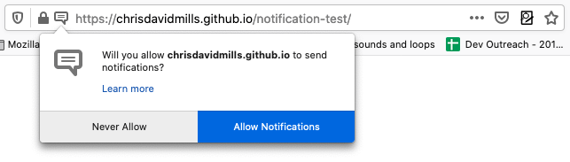

{{DefaultAPISidebar(“Web Notifications”)}}{{AvailableInWorkers}}{{securecontext_header}}
The Notifications API allows web pages to control the display of system notifications to the end user. These are outside the top-level browsing context viewport, so therefore can be displayed even when the user has switched tabs or moved to a different app. The API is designed to be compatible with existing notification systems, across different platforms.
On supported platforms, showing a system notification generally involves two things. First, the user needs to grant the current origin permission to display system notifications, which is generally done when the app or site initialises, using the {{domxref(“Notification.requestPermission()”)}} method. This should be done in response to a user gesture, such as clicking a button, for example:
btn.addEventListener('click', function() {
let promise = Notification.requestPermission();
// wait for permission
})This is not only best practice — you should not be spamming users with notifications they didn’t agree to — but going forward browsers will explicitly disallow notifications not triggered in response to a user gesture. Firefox is already doing this from version 72, for example.
This will spawn a request dialog, along the following lines:

From here the user can choose to allow notifications from this origin, or block them. Once a choice has been made, the setting will generally persist for the current session.
Note: As of Firefox 44, the permissions for Notifications and Push have been merged. If permission is granted for notifications, push will also be enabled.
Next, a new notification is created using the {{domxref(“Notification.Notification”,“Notification()”)}} constructor. This must be passed a title argument, and can optionally be passed an options object to specify options, such as text direction, body text, icon to display, notification sound to play, and more.
In addition, the Notifications API spec specifies a number of additions to the ServiceWorker API, to allow service workers to fire notifications.
Note: To find out more about using notifications in your own app, read Using the Notifications API.
| Specification |
|---|
| Notifications API Living Standard |
{{Compat(“api.Notification”)}}